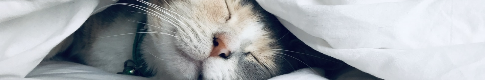

Quem somos
Adoção
Apadrinhamento
Doações
Contato

formulário de adoção
Nome
E-mail
Telefone
Data de Nascimento
RG
CPF
Endereço
Bairro
Complemento
Estado
Cidade
CEP
Assinale
Gatos podem viver até 15 anos, você está preparado para esse compromisso?
Possuo residência telada.
Algum dos moradores tem alergia a gatos?
Possuo outros animais de estimação.
Já tive outros gatos.
Por que quer adotar um gatinho?
O que fará com o gatinho caso alguém em casa engravidar?
Voltar
Enviar